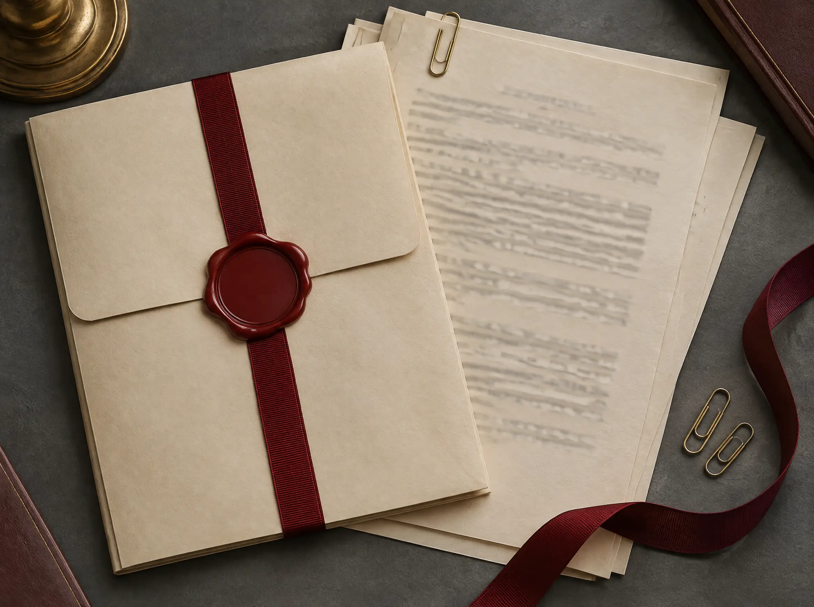

Propozycja I
Ambasada
Papier firmowy ambasady: kremowe tło, granatowy atrament, cienkie złote linie.
Zobacz
Propozycja II
Gala państwowa
Wieczorny ceremoniał: ciemny granat i szampańskie złoto, jak zaproszenie na przyjęcie państwowe.
Zobacz
Propozycja III
Złoty most
Jasny, spokojny styl genewski. Złoty łuk łączy dwie strony porozumienia.
Zobacz
Propozycja IV
Protokół
Poufne memorandum: numerowane paragrafy, bordo i załączniki z podpisami.
Zobacz
Propozycja V
Gabinet
Gabinet męża stanu: butelkowa zieleń, mosiądz i układ jak w magazynie.
Zobacz